Lab 4: Bayesian inference
As with all lab reports, your answers will either take the form of R functions or short written responses (submitted together in a Word document). The R functions should be stored in an R script file (‘.R’ extension). No need to use any specific naming conventions for your files as long as you submit via WebCampus.
Please submit the R script and the Word document via WebCampus by midnight on the due date. You can work in groups but please submit the materials individually.
First, take a little time to review the Bayesian inference lecture and MCMC lecture!
Lab 4 is due before midnight on Tuesday November 16
Bayesian inference (with BUGS!)
If you haven’t already installed JAGS on your computer, use this link. You need to install JAGS on your computer – loading R packages like ‘jagsUI’ is not enough.
In this lab we will be applying a Bayesian approach to model fitting using the same myxomatosis dataset and data generating model that we used in the previous lab (lab 3: maximum likelihood inference). To do this, we’ll be using the program JAGS (Just Another Gibbs Sampler).
JAGS runs on all platforms and runs seamlessly with R, if you download the “R2jags”, “runjags” or the “jagsUI” packages! JAGS is not the only way to do Bayesian analyses, nor is it the only implementation of the BUGS (Bayesian inference Using Gibbs Sampler) language. Others that you may have heard of include WinBUGS, OpenBUGS and NIMBLE (R package). STAN is another widely used software for Bayesian inference, but STAN doesn’t use the BUGS language (it has its own language!)
To familiarize ourselves with the BUGS language, let’s look at some BUGS code (for our favorite myxomatosis dataset).
#############
# sample BUGS code
model {
#############
# LIKELIHOOD
############
for(obs in 1:n.observations){
titer[obs] ~ dgamma(shape,rate)
}
#############
# PRIORS
############
shape ~ dgamma(0.001,0.001)
scale ~ dgamma(0.001,0.001)
rate <- 1/scale # in BUGS, gamma distribution needs a "rate" parameter rather than a scale
}
The syntax in BUGS/JAGS is very similar to R, but there are a few key differences. Notably, assignment must always be done by the arrow (<-) instead of an equals sign and the tilde (~) is used to define stochastic processes.
The arrow operator (<-) is used to define deterministic relationships, and can be read as “is defined as:”
The tilde operator (~) is used to define random variables, and can be read as “is distributed as:”
In the model code, you must also specify your priors. Here we are using ‘vague’ priors, meaning that the probability is ‘spread out’ fairly evenly over a wide parameter space. The Gamma distribution is always parameterized according to a shape and rate parameter (in that order) in BUGS (rate = 1/scale). If you wanted to see what this distribution looked like, you could plot in R (‘dgamma()’ allows you to specify a rate or a scale parameter):
par(mfrow=c(2,1))
curve(dgamma(x, shape=0.001, rate=0.001),0,100,ylim=c(0,0.1),xlab="shape parameter",ylab="probability density", main="Prior")
curve(dgamma(x, shape=0.001, rate=0.001),0.01,0.5,ylim=c(0,1),xlab="scale parameter",ylab="probability density")
In this case we want a prior distribution that has little to no information about which values of the parameter are most probable. These distributions have no peaks within the range of parameter space of interest, and the probability for any particular x-value is very low, so it does a fairly good job of representing a vague prior for the shape and rate parameters.
Running JAGS through R
Setting up the model!
We can use the ‘jagsUI’ package in R (or runjags, or R2jags: there are several packages available that do basically the same thing) to run JAGS through R and have the output returned to R so that we can analyze and manipulate it further.
First, let’s install and load the ‘jagsUI’ package. While you’re at it, install and load the coda package, which has some great utilities for visualizing and working with MCMC data.
### load key packages for running Bayesian analysis in JAGS
library(jagsUI)
library(coda)##
## Attaching package: 'coda'## The following object is masked from 'package:jagsUI':
##
## traceplotlibrary(HDInterval)
library(emdbook)
#library(R2jags) # alternatives
#library(runjags)Writing out the model
We can use the ‘cat’ function in R to write out a text file- it can be useful to use this functionality to embed the JAGS code within our R script!
filename <- "BUGSmodel.txt"
cat("
model {
#############
# LIKELIHOOD
############
for(obs in 1:n.observations){
titer[obs] ~ dgamma(shape,rate)
}
#############
# PRIORS
############
shape ~ dgamma(0.01,0.01)
scale ~ dgamma(0.001,0.001)
rate <- 1/scale
}
",file=filename
)Bundling the data
We will need to tell BUGS/JAGS what the data are. To be read into JAGS (via the R2JAGS package), the data need to be bundled together in a list object. The data (list elements) need to have the same names as specified in the BUGS model file:
First we get the data we want into R (we know the drill!):
library(emdbook)
MyxDat <- MyxoTiter_sum
Myx <- subset(MyxDat,grade==1) #Data set from grade 1 of myxo data
head(Myx)Then we bundle the data as a list, which is what JAGS wants!
myx.data.for.bugs <- list(
titer = Myx$titer,
n.observations = length(Myx$titer)
)
myx.data.for.bugs## $titer
## [1] 5.207 5.734 6.613 5.997 6.612 6.810 5.930 6.501 7.182 7.292 7.819 7.489
## [13] 6.918 6.808 6.235 6.916 4.196 7.682 8.189 7.707 7.597 7.112 7.354 7.158
## [25] 7.466 7.927 8.499
##
## $n.observations
## [1] 27Setting the initial values for our Markov chain(s)
It is convenient to define an “initial value generator” function that randomly generates a list of initial values– this way, each MCMC chain can automatically be initialized with different starting values!
init.vals.for.bugs <- function(){
list(
shape=runif(1,20,100),
scale=runif(1,0.05,0.3)
)
}
init.vals.for.bugs()## $shape
## [1] 77.77983
##
## $scale
## [1] 0.1110147init.vals.for.bugs()## $shape
## [1] 60.26244
##
## $scale
## [1] 0.2063707Alternatively, we can specify exact initial values for our chains (in this case, we initialize three Markov chains)
inits = list(list(shape=90,scale=0.1), list(shape=50,scale=0.2), list(shape=150,scale=0.04)) # a list of lists!Note that we need three different sets of starting values in order to run three different chains. Just like an optimization algorithm in ML analysis, JAGS may not work if you specify unreasonable initial parameters (and it won’t necessarily tell you that is the problem).
Now we’ll run this model through JAGS:
params.to.store <- c("shape","scale") # specify the parameters we want to get the posteriors for
jags.fit <- jags(data=myx.data.for.bugs,inits=init.vals.for.bugs,parameters.to.save=params.to.store,n.iter=50000,model.file="BUGSmodel.txt",n.chains = 3,n.burnin = 5000,n.thin = 20,parallel=TRUE )##
## Processing function input.......
##
## Done.
##
## Beginning parallel processing using 3 cores. Console output will be suppressed.
##
## Parallel processing completed.
##
## Calculating statistics.......
##
## Done.jags.fit## JAGS output for model 'BUGSmodel.txt', generated by jagsUI.
## Estimates based on 3 chains of 50000 iterations,
## adaptation = 100 iterations (sufficient),
## burn-in = 5000 iterations and thin rate = 20,
## yielding 6750 total samples from the joint posterior.
## MCMC ran in parallel for 0.055 minutes at time 2021-11-03 10:01:18.
##
## mean sd 2.5% 50% 97.5% overlap0 f Rhat n.eff
## shape 45.621 12.183 25.098 44.414 73.182 FALSE 1 1.002 1166
## scale 0.164 0.048 0.094 0.156 0.275 FALSE 1 1.006 899
## deviance 77.412 2.095 75.388 76.785 82.978 FALSE 1 1.003 6750
##
## Successful convergence based on Rhat values (all < 1.1).
## Rhat is the potential scale reduction factor (at convergence, Rhat=1).
## For each parameter, n.eff is a crude measure of effective sample size.
##
## overlap0 checks if 0 falls in the parameter's 95% credible interval.
## f is the proportion of the posterior with the same sign as the mean;
## i.e., our confidence that the parameter is positive or negative.
##
## DIC info: (pD = var(deviance)/2)
## pD = 2.2 and DIC = 79.608
## DIC is an estimate of expected predictive error (lower is better).For each parameter, n.eff is a crude measure of effective sample size, and Rhat is the potential scale reduction factor (Gelman-Rubin diagnostic: at convergence, Rhat=1).
DIC is an information criterion (Deviance Information Criterion), similar to AIC (lower DIC is better).
You can see the means and variance for the parameters as well as the DIC for the model. We can summarize these in plots of the posterior distributions. First, we define the MCMC output as a ‘coda’ object (for storing, visualizing and analyzing MCMC results) that R knows how to work with.
jagsfit.mcmc <- jags.fit$samples # retrieve results as 'coda' object (coda package)
summary(jagsfit.mcmc)##
## Iterations = 5020:50000
## Thinning interval = 20
## Number of chains = 3
## Sample size per chain = 2250
##
## 1. Empirical mean and standard deviation for each variable,
## plus standard error of the mean:
##
## Mean SD Naive SE Time-series SE
## shape 45.6213 12.18250 0.1482807 0.589602
## scale 0.1636 0.04805 0.0005848 0.002323
## deviance 77.4118 2.09546 0.0255051 0.065865
##
## 2. Quantiles for each variable:
##
## 2.5% 25% 50% 75% 97.5%
## shape 25.09821 36.9745 44.4137 53.0285 73.182
## scale 0.09406 0.1305 0.1561 0.1876 0.275
## deviance 75.38775 75.9476 76.7853 78.2262 82.978plot(jagsfit.mcmc)
library(lattice)##
## Attaching package: 'lattice'## The following object is masked from 'package:jagsUI':
##
## densityplotdensityplot(jagsfit.mcmc)
You can visually check for convergence here, using the traceplots – a converged run will look like white noise (fuzzy caterpillar) and the samples will not be hitting any ceilings or floors.
Parameter uncertainty: credible intervals
We can estimate the 95% credible interval for each parameter using the quantile method or the HPD interval method. The ‘sims.list’ part of the output has all of the MCMC samples that were created during the run (combining all chains).
## quantile method
shape95 = quantile(jags.fit$sims.list$shape,c(0.025,0.975))
scale95 = quantile(jags.fit$sims.list$scale,c(0.025,0.975))
shape95## 2.5% 97.5%
## 25.09821 73.18158scale95## 2.5% 97.5%
## 0.09406168 0.27503669## HPD method (highest posterior density intervals)
library(HDInterval)
shape95 = hdi(jags.fit$sims.list$shape,0.95)
scale95 = hdi(jags.fit$sims.list$scale,0.95)
shape95## lower upper
## 24.49485 71.60872
## attr(,"credMass")
## [1] 0.95scale95## lower upper
## 0.08391525 0.25060758
## attr(,"credMass")
## [1] 0.95Either way we compute it, the probability that the a parameter is between these 2 numbers is 95%!
So, what’s so great about this? Using a vague prior, we get almost the exact same parameter estimates that we did when we just did a straight up maximum-likelihood analysis. This is usually the case with simple models like the run we ran here. However, answers can be quite different with more complicated models, and in fact the Bayesian approach allows us to simultaneously fit complex models that we could not easily fit using maximum-likelihood approaches.
That said, there are several advantages to the Bayesian approach, having to do with the fact that the answer comes in the form of a probability distribution (or random samples from a probability distribution) instead of a point estimate.
For one, the credible interval is much nicer to interpret than a confidence interval. There’s none of this “given that the null hypothesis is true”, and “were we to re-sample the data 100000 times…”. You can state simply that there’s a 95% probability that the value of the parameter lies within the credible interval. Period.
For another, when running simulations you can draw from posterior probability distributions to create simulations that include the full variability of outcomes instead of just point estimates, which will demonstrate the implications of uncertainty in your parameter estimates (e.g. under different management scenarios, climate change, etc.). We’ll explore how to do this a little later.
Exercise 4.1: Myxomatosis analysis in JAGS #1
In this exercise, you are asked to implement a Ricker deterministic function to the Myxomatosis data in JAGS.
Exercise 4.1a.
Write a function called “Myx_Ricker_JAGS()” that runs the Myxomatosis/Ricker example from the previous (likelihood) lab in JAGS. Recall that we are modeling titer levels (grade 1 only) as a function of the days since infection. Submit this function as part of your R script.
- input:
- data = a matrix of 2 columns and one row per observation. The first column should represent the days since infection, and the second column should represent the virus titer.
- JAGScode = a text string, representing the file name for your JAGS code. [NOTE: the code for writing the JAGS model as a text file does not need to be included in the function, although it needs to be in your script one way or another!]
- CImethod = a text string, representing whether the CI should be computed using the quantile method (“quantile”) or the HPD method (“HPD”). See the Bayesian lecture for more information.
- CIlevel = a number from 0 to 1 indicating what confidence level you want for the CI: set the default value to 0.95.
- suggested algorithm:
- Write and store the JAGS model as a text file [this can be done outside the Myx_Ricker_JAGS() function]
- Package the data for JAGS (store all data in a named list object)
- Write a function that returns a list for initializing the MCMC chains [this could be defined inside or outside the Myx_Ricker_JAGS() function]
- Run the ‘jags()’ function from the ‘jagsUI’ package with 3 chains, specifying the parameters for which you wish to store the MCMC output (“a”, “b”, and “shape”), and store the results as an R object.
- Display the trace plots and density plots for the three parameters (you may need to comment this part out for testing in the ‘sandbox’ below due to graphical constraints)
- compute the posterior means for the a, b and shape params and store as a named vector (three elements, named “a”, “b”, and “shape”, in that order).
- Plot the raw data (days on x axis and titer on y axis), and overlay the fitted Ricker curve, with Bayesian point estimates (posterior means) to evaluate fit.
- compute the credible interval (CI) for the three parameters using either the quantile method or the HPD method (as requested by the user), and store as a 2x3 matrix (see below). HINT: use the ‘HDInterval’ package to help compute the HPD.
- compute the overall Gelman-Rubin diagnostic (‘gelman.diag’ function, quantity labeled ‘Multivariate psrf’) for all three parameters using the ‘coda’ version of the JAGS results (e.g., ‘myjagsmodel$samples’).
- return:
- a list of length 3 containing (list element 1) a named vector of point estimates (posterior means) for parameters a, b, and shape, (list element 2) a matrix with 2 rows and 3 columns, containing the 95% credible interval (row 1 is the lower bound, row 2 is the upper bound, columns represent parameters a, b, and shape), and (list element 3) a single number representing the ‘multivariate’ Gelman-Rubin diagnostic (potential scale reduction factor)- a tool for assessing MCMC convergence.
Include your function in your submitted r script!
You can use this “sandbox” (below) to develop and test your function!
NOTE: you need to include code that writes out your BUGS textfile, whether or not it is inside or outside your function. If your BUGS code (text file) is not named “BUGSmodel_ricker.txt” you will have to change the file name in the test code (last line in the “sandbox” below).
NOTE: to test your code in the “sandbox” you may need to suppress (comment out) the part of the function that generates multi-panel plots, or you may get the dreaded “figure margins too large” error.
Myx_Ricker_JAGS <- function(data,JAGScode,CImethod,CIlevel){
# [add code here!]
}
# MyxDat <- emdbook::MyxoTiter_sum
# Myx <- subset(MyxDat,grade==1) #Data set from grade 1 of myxo data
# this <- Myx_Ricker_JAGS(data=Myx[,-1],JAGScode = "BUGSmodel_ricker.txt", CImethod = "HPD", CIlevel = 0.95)
# test <- this$conf.intsHere is some test code, along with a sample of the results you should expect to see when running your new function:
Ricker_results <- Myx_Ricker_JAGS(data=Myx[,-1],JAGScode="BUGSmodel_ricker.txt",CImethod="HPD",CIlevel=0.88)##
## Processing function input.......
##
## Done.
##
## Beginning parallel processing using 3 cores. Console output will be suppressed.
##
## Parallel processing completed.
##
## Calculating statistics.......
##
## Done.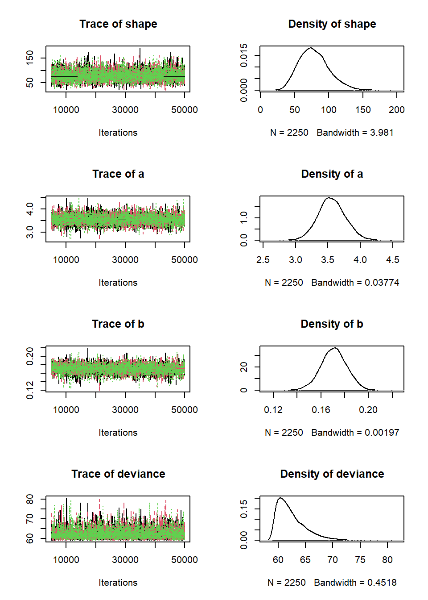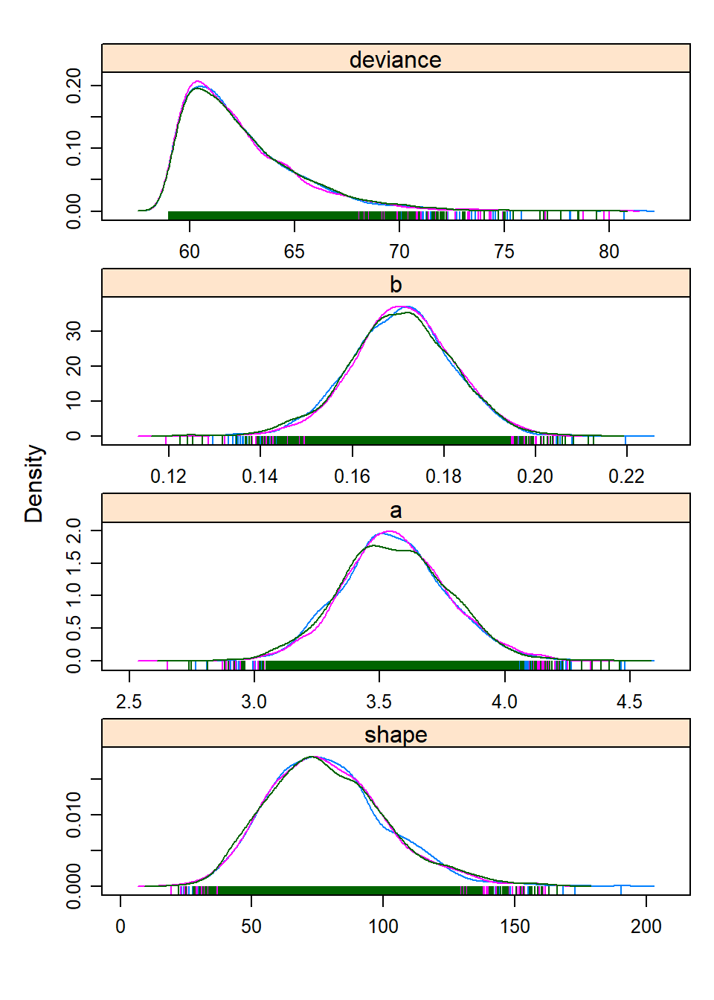
Ricker_results## $post.mean
## [1] 3.5592761 0.1707621 78.8566682
##
## $conf.ints
## a b shape
## [1,] 3.243868 0.1546972 43.01744
## [2,] 3.903913 0.1890579 111.13174
##
## $gelman.rubin
## [1] 1.001646Ricker_results <- Myx_Ricker_JAGS(data=Myx[,-1],JAGScode="BUGSmodel_ricker.txt",CImethod="quantile",CIlevel=0.88)##
## Processing function input.......
##
## Done.
##
## Beginning parallel processing using 3 cores. Console output will be suppressed.
##
## Parallel processing completed.
##
## Calculating statistics.......
##
## Done.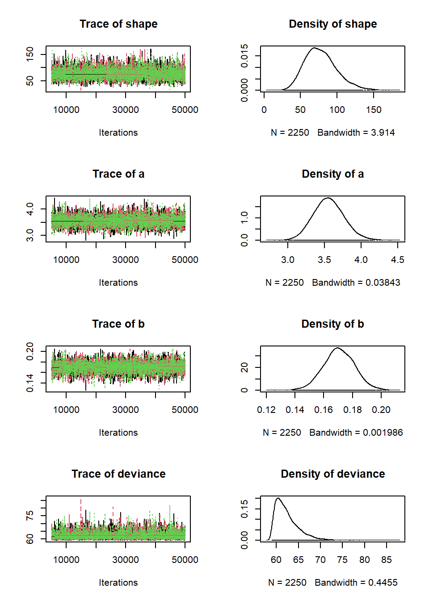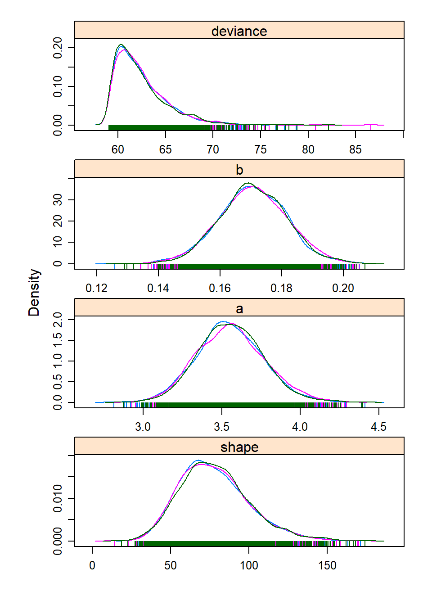
Ricker_results## $post.mean
## [1] 3.5560434 0.1705776 77.9554655
##
## $conf.ints
## a b shape
## [1,] 3.236957 0.1535154 47.23751
## [2,] 3.888882 0.1873465 115.24221
##
## $gelman.rubin
## [1] 1.000893Exercise 4.1b.
Can you identify any differences between the parameter estimates from the analysis in a likelihood vs Bayesian perspective? Compare your results from Lab 3, and briefly describe your findings in your Word document, along with a brief description of why these differences might arise.
Exercise 4.1c.
Did your MCMC chains converge on the joint posterior distribution? Briefly explain your reasoning in your Word document! Use several lines of reasoning, and provide figures where appropriate!
Exercise 4.2: Myxomatosis in JAGS with Michaelis-Menten deterministic function
Recalling our plot (from the last lab) of the Ricker function with the maximum-likelihood parameter estimates drawn over the scatterplot of titers by day, there really isn’t much evidence in the data for that downward turn in the function after day 6. We chose a model that indicated decline in titer levels following a peak based on the behavior of other myxomytosis grades, but given the virulence of this particular grade most animals die once the titer levels reach their maximum. Might it be more appropriate to fit a model (titer as a function of days since exposure) that levels off at some asymptote instead of declining following the peak? Let’s find out!
Exercise 4.2a.
Repeat the myxomatosis example in BUGS/JAGS, but this time use the Michaelis-Menten function, which has the same number of parameters as the Ricker function, but increases to an asymptote (see below). Continue to use a Gamma distribution to describe the error! Please name your new function “Myx_MM_JAGS()”. The inputs and outputs should be the same as for “Myx_Ricker_JAGS()”. Please save this new function in your R script for submission.
The M-M function looks like this:
\(\frac{a\cdot x}{b+x}\)
mm = function(x,a,b) { a*x / (b+x) }You can plot an M-M function over the points to get some initial parameter estimates.
plot(Myx$titer~Myx$day,xlim=c(0,10),ylim=c(0,10))
curve(mm(x,a=5,b=0.8),from=0,to=10,add=T,col="red",lwd=2)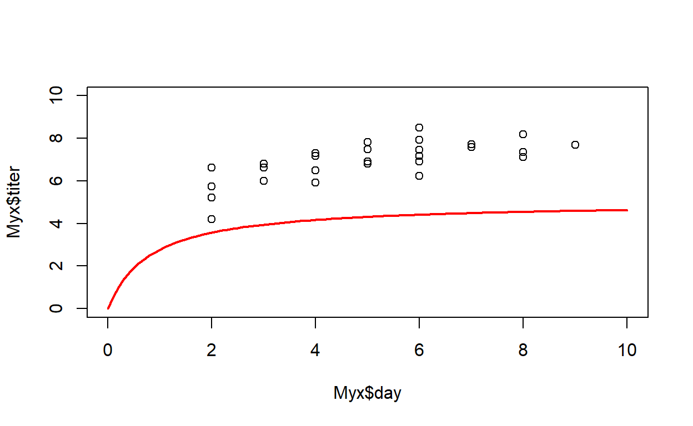
Include your function in your submitted r script!
You can use this “sandbox” (below) to develop and test your function!
NOTE: you need to include code that writes out your BUGS textfile, whether or not it is inside or outside your function. If your BUGS code (text file) is not named “BUGSmodel_mm.txt” you will have to change the file name in the test code (last line in the “sandbox” below).
NOTE: to test your code in the “sandbox” you may need to suppress (comment out) the part of the function that generates multi-panel plots, or you may get the dreaded “figure margins too large” error.
Myx_MM_JAGS <- function(data,JAGScode,CImethod,CIlevel){
# [add code here!]
}
# MyxDat <- emdbook::MyxoTiter_sum
# Myx <- subset(MyxDat,grade==1) #Data set from grade 1 of myxo data
# this <- Myx_MM_JAGS(data=Myx[,-1],JAGScode = "BUGSmodel_mm.txt", CImethod = "HPD", CIlevel = 0.95)
# test <- this$conf.intsAnd here are some test commands with output:
MM_results <- Myx_MM_JAGS(data=Myx[,-1],JAGScode="BUGSmodel_mm.txt",CImethod="HPD",CIlevel=0.88)##
## Processing function input.......
##
## Done.
##
## Beginning parallel processing using 3 cores. Console output will be suppressed.
##
## Parallel processing completed.
##
## Calculating statistics.......
##
## Done.
 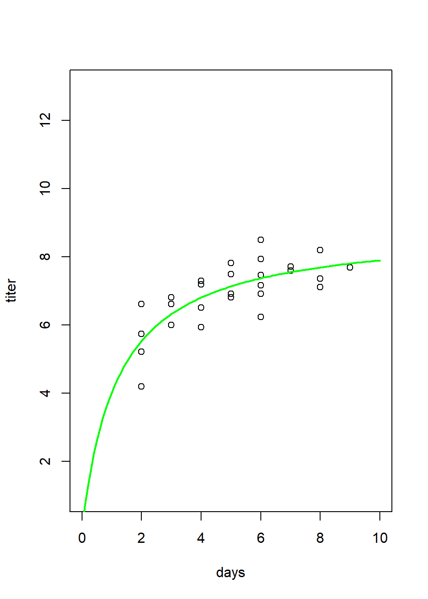
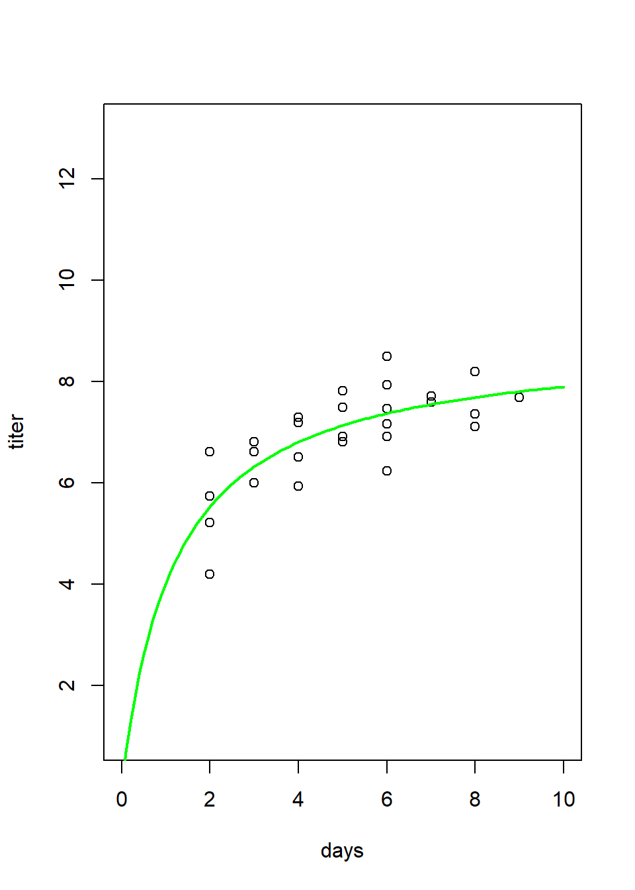
MM_results## $post.mean
## [1] 8.840559 1.197493 98.822267
##
## $conf.ints
## a b shape
## [1,] 8.016631 0.7145943 53.95583
## [2,] 9.645618 1.6835271 138.65122
##
## $gelman.rubin
## [1] 1.00197MM_results <- Myx_MM_JAGS(data=Myx[,-1],JAGScode="BUGSmodel_mm.txt",CImethod="quantile",CIlevel=0.88)##
## Processing function input.......
##
## Done.
##
## Beginning parallel processing using 3 cores. Console output will be suppressed.
##
## Parallel processing completed.
##
## Calculating statistics.......
##
## Done.

MM_results## $post.mean
## [1] 8.837512 1.197347 98.918727
##
## $conf.ints
## a b shape
## [1,] 8.061727 0.7457973 59.64727
## [2,] 9.676685 1.7069276 145.46353
##
## $gelman.rubin
## [1] 1.005936Exercise 4.2b.
In your Word document, please answer the following question: overlay both the best-fit M-M and the best-fit Ricker curves on a plot of the data (please include this figure in your Word document). On the basis of simple visual cues, does the M-M function seem to fit better than the Ricker function to describe this relationship? Explain your reasoning.
And here is an example of what your figure should look like with the best-fit M-M and Ricker functions overlaid on the same plot:

Exercise 4.3. Goodness-of-fit and model comparison
Let’s try a different approach for visualizing the goodness-of-fit of these two models. For each of these models, follow the instructions provided below to evaluate goodness-of-fit. On the basis of a posterior predictive check (see below), how well would you say each model fits the observed data? Do you see any red flags that would indicate poor goodness-of-fit?
Exercise 4.3a.
Write a function called “Myx_PostPredCheck()” that compares the goodness-of-fit for the two models (ricker vs M-M) using a posterior predictive check.
- input:
- MCMC1 = the object generated from running the ‘jags()’ function with the Ricker function.
- MCMC2 = the object generated from running the ‘jags()’ function with the Michaelis-Menten function.
- MCMC1 = the object generated from running the ‘jags()’ function with the Ricker function.
- suggested algorithm:
- For each model (Ricker, M-M), generate new data under the fitted model. For each of an arbitrarily large number (e.g., 1000) of replicates, sample from the joint posterior distribution:
pick a random integer between 1 and the number of MCMC samples (e.g., call that number “random_index”)
Then, use that random index to draw a single sample from the joint posterior distribution for the parameters “a”, “b”, and “shape”. This could look something like this:
new.draw <- jags.fit$sims.list$a[random_index](for the ‘a’ parameter).
Using those parameters you just drew from the joint posterior distribution (i.e., assuming the “a”, “b”, and “shape” parameters you just drew are the ‘true’ parameters), simulate a new data set with the same number of observations as your original dataset (For each real observation, generate a single simulated observation under the data generating model)
For each simulated data point, compute the squared residual error- that is, the squared difference between the simulated data point and the expected value from the Ricker or M-M model.
For each observed data point, compute the squared residual error- that is, the squared difference between the observed data point and the expected value from the Ricker or M-M model.
Compute and store the sum of squared errors across all observations (SSE) for both the observed data (SSE_obs) and the simulated data (SSE_sim) corresponding to each sample from the joint posterior distribution.
- For each model (Ricker, M-M), use the ‘boxplot()’ function to display the range of plausible data that could be generated under the fitted model (using the simulated data). Overlay the observed data. This provides a visual goodness-of-fit evaluation (visual Posterior Predictive Check).
- Plot the sum of squared error for the simulated data sets (Y axis) against the sum of squared error for the actual data set. Overlay a 1:1 line (that is, the line corresponding to y=x). This is another type of visual Posterior Predictive Check.
- Compute the proportion of the simulated error metrics (SSE_sim, computed from the simulated data) that are larger than the analogous discrepancy metric computed from the observed data (SSE_obs). This quantity is often called a Bayesian p-value (but note that this is interpreted very differently than a frequentist p-value, and can therefore be a bit of a confusing term!).
- For each model (Ricker, M-M), generate new data under the fitted model. For each of an arbitrarily large number (e.g., 1000) of replicates, sample from the joint posterior distribution:
- return:
- a list of length 3 containing (1) a vector of length 2 storing the Bayesian p-values for the two models (Ricker first, then M-M), computed above, (2) a data frame with number of rows equal to the number of simulation replicates (e.g., 1000) and five columns: the first three indicating the sampled parameter values drawn from the joint posterior for the Ricker model (“a”, “b”, and “shape”), followed by the corresponding SSE_sim (sum of squared error computed from simulated data) and SSE_obs (sum of squared error computed from observed data) [NOTE: the last two columns are the data used to compute the Bayesian p-value), and (3) an analogous data frame for the M-M model.
Include your function in your submitted r script!
You can use this “sandbox” (below) to develop and test your function!
NOTE: the objects “jags.fit_ricker” and “jags.fit_mm” are available in the “sandbox” below for testing your function.
Myx_PostPredCheck <- function(MCMC1,MCMC2){
# [add code here!]
}
# Myx_PostPredCheck(MCMC1=jags.fit_ricker,MCMC2=jags.fit_mm)##
## Processing function input.......
##
## Done.
##
## Beginning parallel processing using 3 cores. Console output will be suppressed.
##
## Parallel processing completed.
##
## Calculating statistics.......
##
## Done.##
## Processing function input.......
##
## Done.
##
## Beginning parallel processing using 3 cores. Console output will be suppressed.
##
## Parallel processing completed.
##
## Calculating statistics.......
##
## Done.And here is what the results of your function should look like!
####
# Test the function
test <- Myx_PostPredCheck(MCMC1=jags.fit_ricker,MCMC2=jags.fit_mm)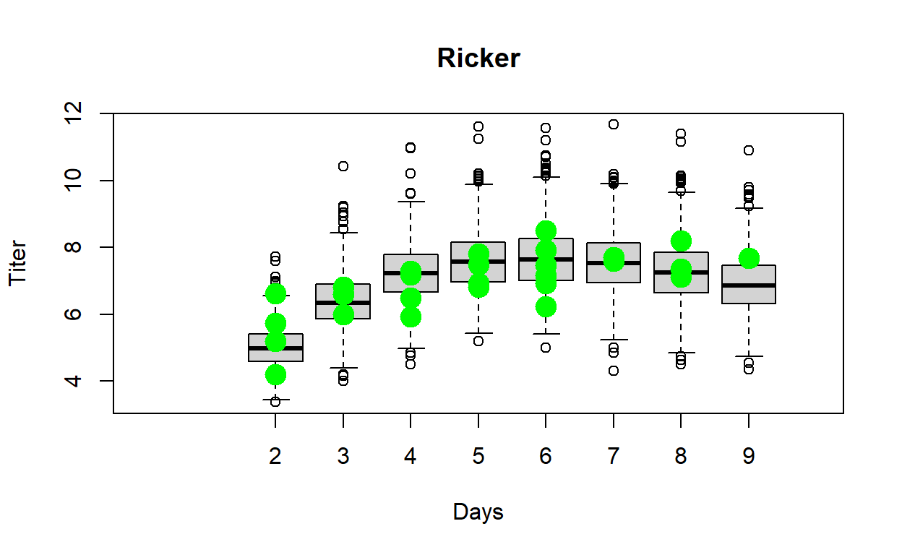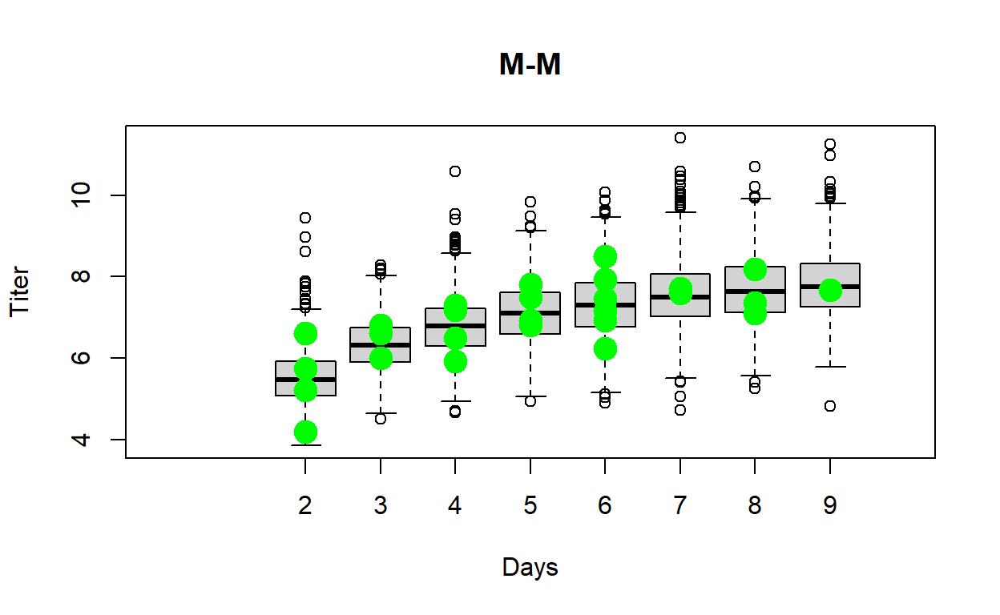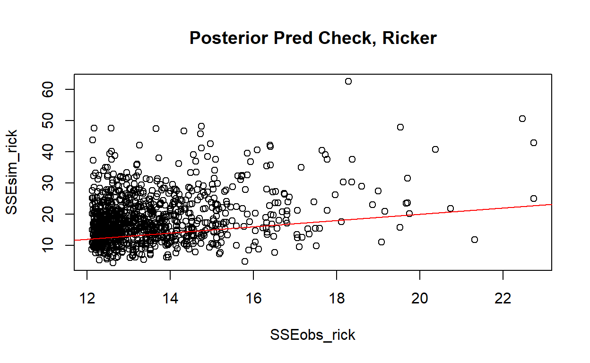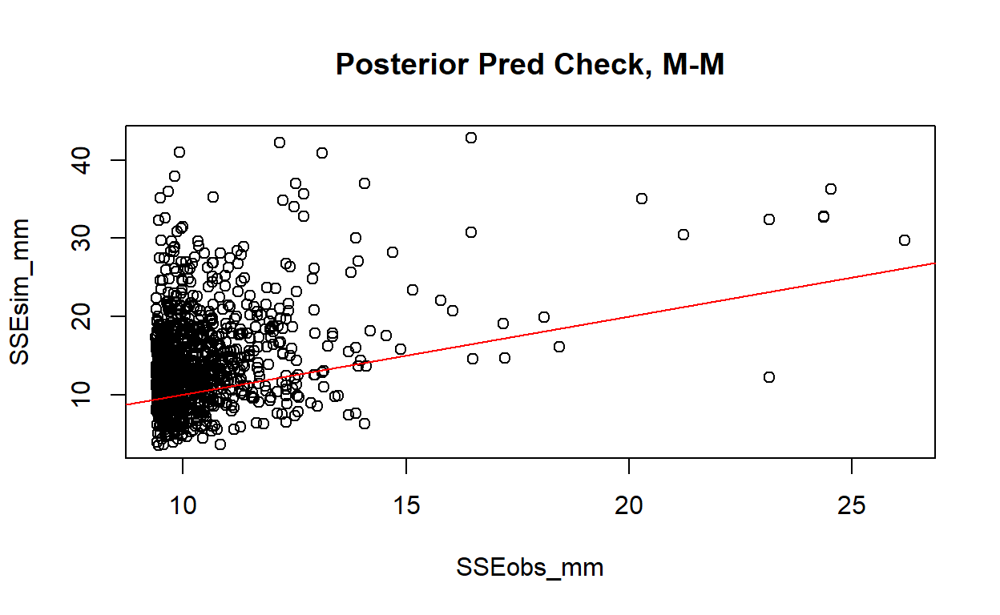
test[[1]] # p-vals## [1] 0.72 0.73head(test[[2]]) # ppc for rickerhead(test[[3]]) # ppc for M-MExercise 4.3b.
In your Word document, please explain how you interpret the Bayesian p-value in the previous example. What Bayesian p-value would you expect if the model fit was perfect? What would you expect if the model fit was poor? What does the Bayesian p-value tell us about how well the Ricker and M-M models fit the data? Does one model fit better than the other?
Exercise 4.4 (extra credit)
DIC (analogous to AIC) is a model selection criterion for Baysian models fitted with MCMC. Just like for AIC (see model selection lecture), models with smaller values of DIC are favored. Which model (M-M or Ricker) is the better model based on DIC? What does the difference in DIC mean in terms of the strength of evidence in support of one of these models as the “best model”? [You should be aware that DIC is not a perfect solution for Bayesian model selection. For one, it is only valid if the posterior is approximately multivariate normal]
WAIC (also analogous to AIC) is another model selection criterion for Bayesian models fitted with MCMC. Just like for AIC, models with smaller values of WAIC are favored. Which model (M-M or Ricker) is the better model based on WAIC? What does the difference in WAIC mean in terms of the strength of evidence in support of one of these models as the “best model”?
## Warning: package 'loo' was built under R version 4.1.1## This is loo version 2.4.1## - Online documentation and vignettes at mc-stan.org/loo## - As of v2.0.0 loo defaults to 1 core but we recommend using as many as possible. Use the 'cores' argument or set options(mc.cores = NUM_CORES) for an entire session.## - Windows 10 users: loo may be very slow if 'mc.cores' is set in your .Rprofile file (see https://github.com/stan-dev/loo/issues/94).## Warning:
## 1 (3.7%) p_waic estimates greater than 0.4. We recommend trying loo instead.## Warning:
## 2 (7.4%) p_waic estimates greater than 0.4. We recommend trying loo instead.Here are the results I got:
DIC_ricker## [1] 66.01695DIC_MM## [1] 60.81304WAIC_ricker$estimates["waic",]## Estimate SE
## 66.124530 8.508004WAIC_mm$estimates["waic",]## Estimate SE
## 60.351122 9.277149–End of lab 4–